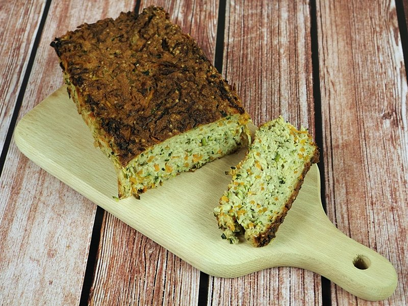
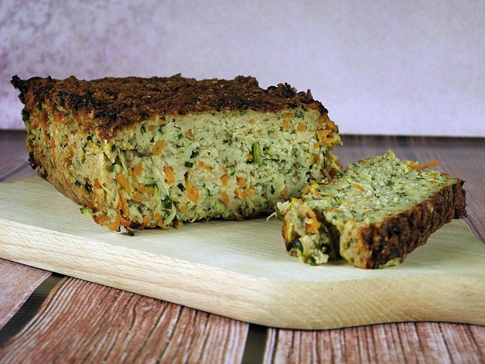
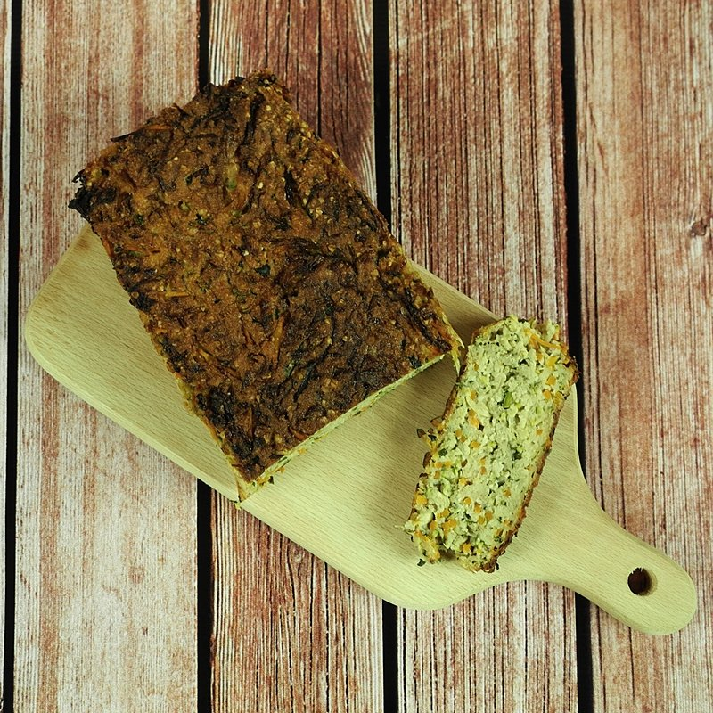
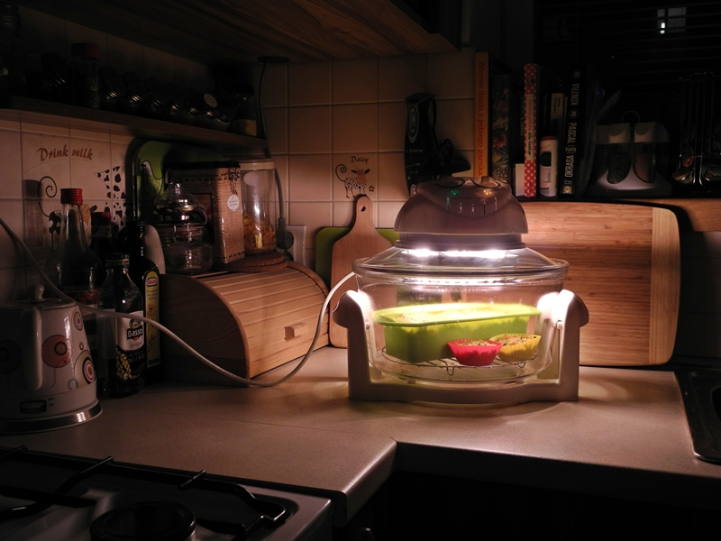

Pasztet z cukinii
Na wstępie pragnę zaznaczyć, że jeśli ktoś robiąc pasztet z cukinii oczekuje smaku tradycyjnego pasztetu, to niech lepiej nie robi go wcale, bo do pasztetu to nie jest ani trochę podobne... :] Smak jest inny, konsystencja raczej też - jedynie w wyglądzie zewnętrznym można doszukiwać się podobieństw. :-) Mimo wszystko zachęcam do wypróbowania - warzywny pasztet na pewno znajdzie swoich amatorów. Można go podawać zarówno na zimno, jak i na ciepło - w tej drugiej wersji polecam posypać go delikatnie ulubionym żółtym serem!

Składniki (na jedną keksówkę):
- 1 duża cukinia
- 2 średnie marchewki
- 1 duża cebula
- 4 jajka
- 1/2 szklanki bułki tartej
- 3/4 szklanki otrębów owsianych
- łyżka oliwy lub innego tłuszczu
- przyprawy: sól, pieprz, duży ząbek czosnku, starta gałka muszkatołowa, suszony majeranek, suszony tymianek
Przygotowanie:
Cukinię dokładnie myjemy (będziemy używać całego warzywa - wraz ze skórą), odkrawamy zdrewniałe części, dzielimy na ćwiartki i wydrążamy pestki. Następnie ścieramy na tarce na dużych oczkach, solimy i odstawiamy na ok. 20 minut by puściła sok - po tym czasie całość mocno odciskamy. Do tak przygotowanej bazy dodajemy startą marchewkę, startą i lekko zeszkloną cebulę oraz składniki sypkie, czyli bułkę tartą i otręby. Całość dokładnie mieszamy, następnie dodajemy rozgnieciony czosnek oraz resztę przypraw (ilość do tzw. "smaku"). Na końcu do masy dodajemy 4 jajka, ponownie składniki dokładnie ze sobą łączymy i wykładamy do silikonowej foremki lub tradycyjnej wyłożonej papierem do pieczenia.
Mój pasztet piekłam w piekarniku halogenowym w 170ºC najpierw w foremce przez godzinę, następnie wyjęłam go z foremki, obróciłam do góry nogami i na samym ruszcie (już bez wkładania do formy) piekłam kolejną godzinę. Uważam jednak, że spokojnie można było ustawić wyższą temperaturę i następnym razem na pewno tak zrobię...
Smacznego!
   